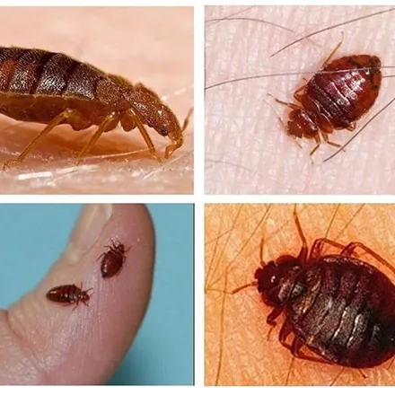
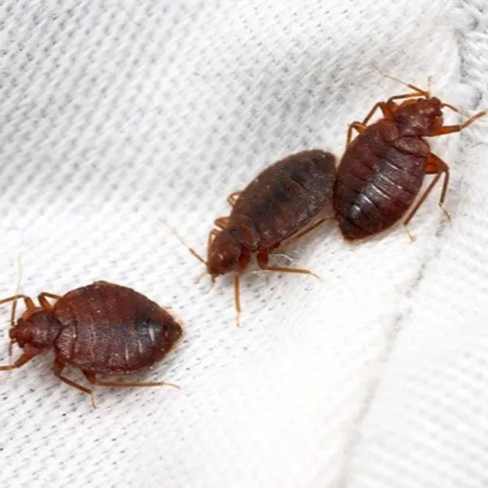
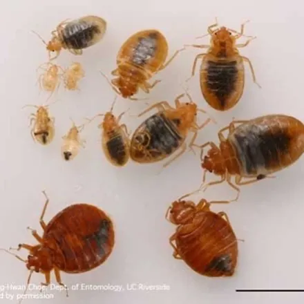

اگر صبحها با جای گزشهای ردیفی و خارشدار از خواب بیدار میشوید یا لکههای ریز خونی روی ملافه میبینید، احتمالاً با ساس تخت طرف هستید؛ حشرهای خونخوار که در درز تشک و شیار تخت پنهان میشود و دفع آن بدون روش اصولی تقریباً غیرممکن است. در این راهنما نشانههای آلودگی به ساس، تفاوت گزش آن با پشه و کک، روشهای خانگی و محدودیتهایشان و روند سمپاشی تخصصی ساس در کرج را کامل بررسی میکنیم.
شناخت ساس و راههای ورود آن به خانه
ساس تخت (Cimex lectularius) حشرهای کوچک، بیبال و تخت به اندازه چهار تا هفت میلیمتر است؛ به رنگ قهوهای که پس از خونخواری تیرهتر و متورمتر میشود. ساس شبفعال است، به گرمای بدن و دیاکسیدکربن بازدم جذب میشود و روزها در درز تشک، شیار چوب تخت، پشت کاغذدیواری، داخل پریز برق و چینهای مبلمان پنهان میماند. هر ساس ماده در طول عمر خود میتواند صدها تخم بگذارد و همین سرعت تکثیر است که یک آلودگی کوچک را ظرف چند هفته به کابوس تبدیل میکند. نکتهٔ مهم دیگر: ساس میتواند ماهها بدون خونخواری زنده بماند؛ پس خالی گذاشتن خانه بهتنهایی مشکل را حل نمیکند.
برخلاف تصور رایج، آلودگی به ساس ربطی به کثیف بودن خانه ندارد. ساس معمولاً با چمدان مسافرت، مبل و تشک دستدوم، لباس، یا از واحدهای مجاور آپارتمان وارد خانه میشود؛ به همین دلیل هتلها، خوابگاهها و خانههای اجارهای بیشترین نقاط شروع آلودگی هستند.
نشانههای آلودگی به ساس
- گزشهای ردیفی یا خوشهای: معمولاً دو تا چند گزش در یک خط، روی نواحی باز بدن هنگام خواب (دست، گردن، پا).
- لکههای خونی ریز روی ملافه: از له شدن ساسهای تغذیهکرده در خواب.
- نقطههای سیاه فضولات: شبیه جوهر خودکار روی درز تشک، کنارههای تخت و پشت تاج تخت.
- پوستهها و تخمهای سفید ریز: در شیارها و درزها؛ نیمفها تا بلوغ چند بار پوستاندازی میکنند.
- بوی شیرین و ماندهٔ خاص: در آلودگیهای شدید در اتاق خواب حس میشود.
برای اینکه گزش ساس را با گزش حشرات دیگر اشتباه نگیرید، این مقایسه کمک میکند:
| ویژگی | ساس | پشه | کک |
|---|---|---|---|
| الگوی گزش | ردیفی یا خوشهای (چند گزش در یک خط) | پراکنده و تکی | خوشهای، بیشتر اطراف مچ پا |
| زمان گزش | شب، هنگام خواب | غروب و شب | هر ساعت، بیشتر با حضور حیوان خانگی |
| محل رایج روی بدن | نواحی باز هنگام خواب: بازو، گردن، شانه | هر جای باز بدن | ساق و مچ پا |
| نشانه در محیط | لکه خون و نقاط سیاه روی ملافه و تشک | صدای وزوز، لارو در آب راکد | دیدن حشره جهنده روی فرش و حیوان |
خطرات ساس برای سلامت
صادقانه بگوییم: ساس برخلاف پشه و کنه، ناقل شناختهشدهٔ بیماری نیست. اما بیخطر هم نیست:
- خارش شدید و واکنشهای حساسیتی پوستی که در برخی افراد شدید است.
- عفونت ثانویهٔ محل گزش در اثر خاراندن، بهخصوص در کودکان.
- بیخوابی، اضطراب و وسواس ناشی از حس گزیده شدن در خواب.
- آسیب جدی به اعتبار هتلها، مسافرخانهها و خوابگاهها در صورت شکایت مهمانان.
راههای پیشگیری از آلودگی به ساس
- در سفر، چمدان را روی زمین یا تخت هتل باز نکنید و پس از بازگشت، لباسها را با آب داغ بشویید.
- مبل، تشک و لوازم دستدوم را پیش از ورود به خانه با دقت از نظر نقاط سیاه و پوسته بررسی کنید.
- از کاور ضدساس برای تشک و بالش استفاده کنید.
- درز و شکاف دیوار مشترک با همسایه، قاب پریزها و کاغذدیواری جدا شده را ترمیم کنید.
- تخت را کمی از دیوار فاصله دهید و اجازه ندهید ملافه به زمین برسد.
روشهای خانگی دفع ساس و محدودیتهای آنها
در آلودگیهای تازه، این اقدامات جمعیت ساس را کم میکند: شستشوی همهٔ ملافهها و لباسها با آب داغ و خشککن، بخارشو کشیدن روی تشک و درز مبلمان (بخار داغ ساس و تخم آن را از بین میبرد)، جاروبرقی دقیق روی درزها و دور انداختن فوری کیسهٔ جارو در بیرون از خانه.
اما محدودیتها را جدی بگیرید: ساس در عمق شیارهایی پنهان میشود که بخار و جارو به آن نمیرسد؛ تخمها به بیشتر حشرهکشهای خانگی مقاوماند؛ و نسلهای جدید ساس نسبت به سموم بازاری مقاومت پیدا کردهاند. تجربه نشان میدهد آلودگی ساس با روش خانگی معمولاً فقط «کوچکتر» میشود، نه ریشهکن؛ و چند هفته بعد برمیگردد. برای دفع قطعی، سمپاشی تخصصی چند مرحلهای لازم است.
روند سمپاشی تخصصی ساس در آرام محیط البرز
آرام محیط البرز با مجوز رسمی وزارت بهداشت، درمان و آموزش پزشکی و مدیریت مهندس فاطمه براتی، کارشناس بهداشت محیط، دفع ساس را در منازل، هتلها و خوابگاههای کرج به این ترتیب انجام میدهد:
۱. مشاوره و بازدید رایگان
کارشناس، تختها، مبلمان و درزهای اتاقها را بررسی میکند، گستردگی آلودگی را مشخص میکند و هزینه و تعداد نوبتهای لازم را پیش از شروع کار بهصورت شفاف اعلام میکند.
۲. سمپاشی چندمرحلهای با سم مجاز
همهٔ مخفیگاهها — درز تشک و تخت، مبلمان، قرنیز، پریزها و قابها — با سموم دارای مجوز وزارت بهداشت تیمار میشود. چون تخم ساس مقاوم است، معمولاً یک نوبت تکمیلی به فاصله ده تا چهارده روز اجرا میشود تا نیمفهای تازه از تخم درآمده نیز از بین بروند.
۳. ضمانت کتبی و پیگیری
پس از پایان کار، ضمانتنامه کتبی دریافت میکنید و توصیههای پیشگیری آموزش داده میشود؛ در صورت مشاهدهٔ مجدد فعالیت در دوره ضمانت، سمپاشی مجدد انجام میشود.
عوامل مؤثر بر هزینه سمپاشی ساس در کرج
- تعداد اتاقها و وسایل آلوده (تخت، مبلمان، فرش و…)
- شدت و قدمت آلودگی؛ آلودگی گسترده به نوبتهای بیشتری نیاز دارد.
- نوع محیط؛ منزل، هتل، خوابگاه یا مسافرخانه.
- تعداد نوبتهای سمپاشی که کارشناس در بازدید اولیه تعیین میکند.
جمعبندی و راه ارتباط
ساس سرسختترین حشرهٔ خانگی است: با کثیفی یا تمیزی خانه کاری ندارد، ماهها بدون غذا زنده میماند و تخمهایش به سموم معمولی مقاوم است. هرچه زودتر اقدام کنید، دفع آن سادهتر و کمهزینهتر است. برای بازدید و مشاوره رایگان در کرج و حومه با کارشناسان آرام محیط البرز تماس بگیرید: 09193613357 و 026-34209019. اگر مشکل شما به جای گزش شبانه، حشرات آشپزخانه است، راهنمای سمپاشی سوسک در کرج را بخوانید.
سوالات متداول سمپاشی ساس
سمپاشی ساس چند نوبت لازم دارد؟
چون تخم ساس در برابر بیشتر سموم مقاوم است، دفع کامل معمولاً به دو نوبت سمپاشی به فاصله حدود ده تا چهارده روز نیاز دارد تا نیمفهایی که بعداً از تخم بیرون میآیند نیز از بین بروند. تعداد دقیق نوبتها را کارشناس پس از بازدید اعلام میکند.
بعد از سمپاشی ساس چه کارهایی انجام دهیم؟
چند ساعت از فضای سمپاشیشده دور بمانید و سپس خانه را هواگیری کنید. ملافهها، روبالشیها و لباسها را با آب داغ بشویید، اما سطوح سمپاشیشده مانند بدنه تخت و درزهای مبل را تا زمانی که کارشناس اعلام میکند نشویید تا اثر سم باقی بماند.
آیا سم ساس برای کودکان و حیوانات خانگی خطر دارد؟
در آرام محیط البرز فقط از سموم دارای مجوز وزارت بهداشت استفاده میشود و روش اجرا با توجه به حضور کودک، سالمند یا حیوان خانگی انتخاب میشود. کافی است هنگام سمپاشی و چند ساعت پس از آن از محیط دور باشید و توصیههای کارشناس را رعایت کنید.
آیا ساس بیماری منتقل میکند؟
برخلاف پشه و کنه، ساس ناقل شناختهشدهٔ بیماری نیست؛ اما گزش آن خارش شدید، حساسیت پوستی و در اثر خاراندن، عفونت ثانویه ایجاد میکند و بیخوابی و اضطراب ناشی از آن کیفیت زندگی را بهشدت پایین میآورد.
چرا ساس بعد از سمپاشی خانگی دوباره برمیگردد؟
اسپریهای خانگی فقط ساسهای در دیدرس را از بین میبرند؛ تخمها و ساسهای پنهان در عمق درز تشک، شیار چوب تخت و پشت قابها زنده میمانند و چند هفته بعد جمعیت دوباره زیاد میشود. دفع ریشهای به شناسایی همهٔ مخفیگاهها و سم تخصصی نیاز دارد.
هزینه سمپاشی ساس در کرج چقدر است؟
هزینه به تعداد اتاقها و وسایل آلوده، شدت آلودگی و تعداد نوبتهای لازم بستگی دارد. بازدید و مشاوره کارشناسان آرام محیط البرز رایگان است و قیمت پیش از شروع کار بهصورت شفاف اعلام میشود. برای استعلام با شماره 09193613357 تماس بگیرید.